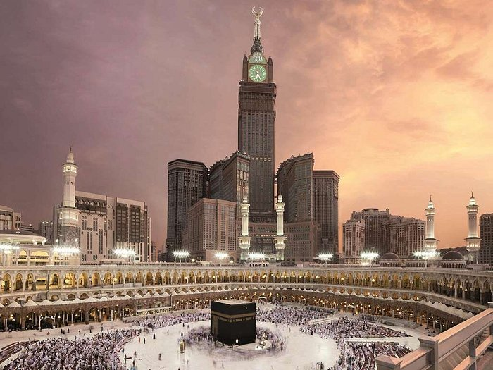

My Travels
All About My Experience in Saudi Arabia:
As a Muslim, one of the first places I had to travel to with my family was Saudi Arabia. Muslims from all around the world come to Makkah, Saudi Arabia to perfom Umrah and Hajj, both of which are acts of worship in Islam that all Muslims hold dear. My very first step in Makkah, Saudi Arabia left me with a feeling that I can't begin to explain with words. I was in awe at the amount of people present in one place at one time. As I walked towards the Kaabah (The center of Makkah), I felt as though I would get lost with the sheer amount of people worshipping and engaging in prayer all together. I worshipped together with my family and had a great time learning about the History of Islam while being in Makkah, Saudi Arabia. I can't forget all of the great food I ate as well!
 Here, we have a picture of the Kaabah in Makkah. All muslims come to the Kaabah to perform Umrah and prayers.
Another destination I visited while in Saudi Arabia was the city of Madinah Al-Munawwarah. It was the most peaceful and quiet place I've ever been to in my life. It was a huge contrast to the bustling city of Makkah which was always filled with noise and people. I enjoyed visiting various mosques in Madinah and learning about our Prophet's life along with the lives of his companions. I visited a museum that displayed the history of Islam and the great people that contributed to Islam. I also took the time to increase in my worship and learn about my religion. One of my favorite parts of visiting both Makkah and Madinah had to be all the great food I ate. I had the pleasure of being able to eat from places that I would otherwise not be able to eat from, such as McDonalds, KFC, and Burger King. I even had the opportunity to try out Saudi Arabian Starbucks! This trip truly left me with experiences that I will cherish for the rest of my life, and I couldn't have asked for a better company to be in than my own family's.
Below is an image of Masjid An-Nabawi which is located in the city of Madinah. It is the mosque of our Prophet and a beautiful place to relax and worship in.